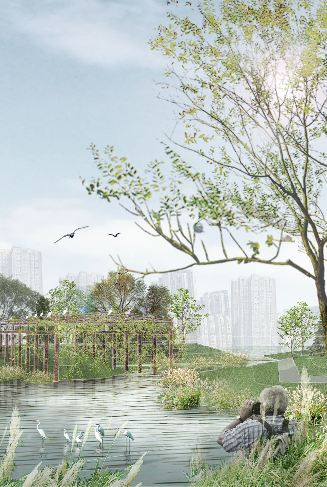
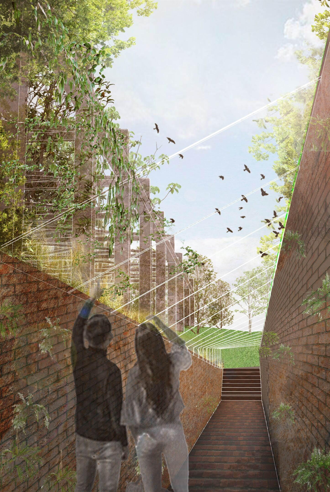
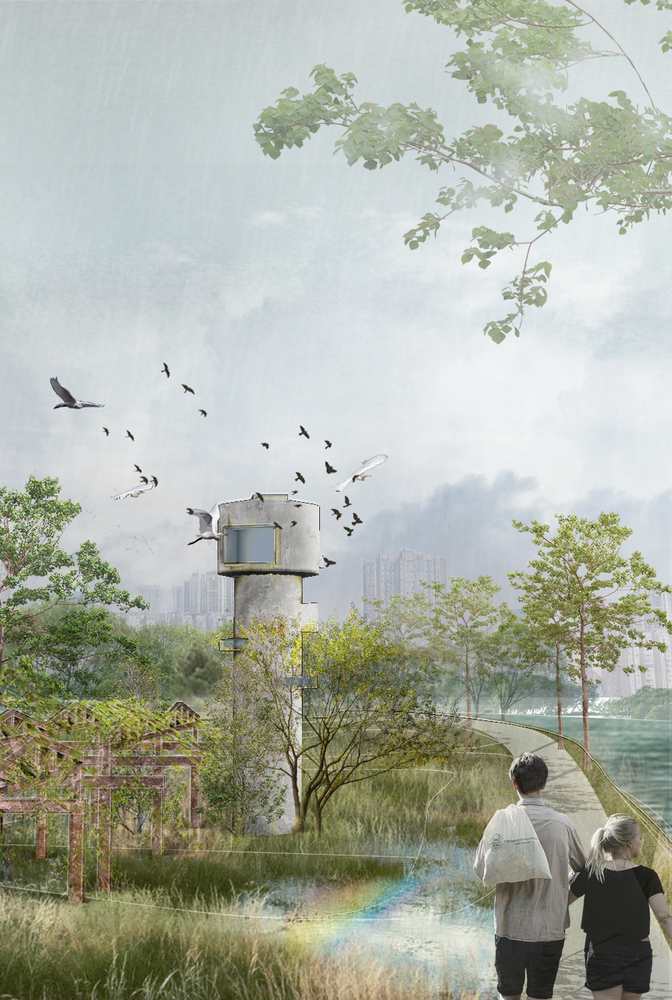
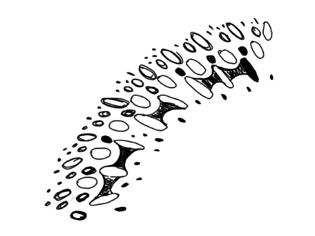
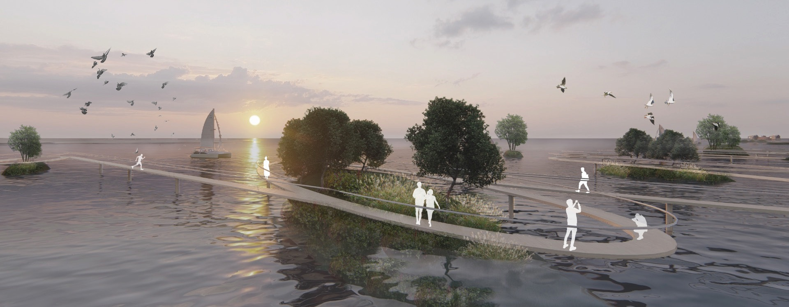
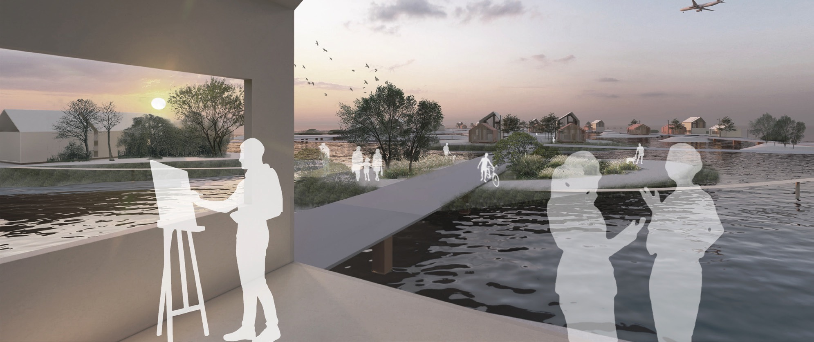
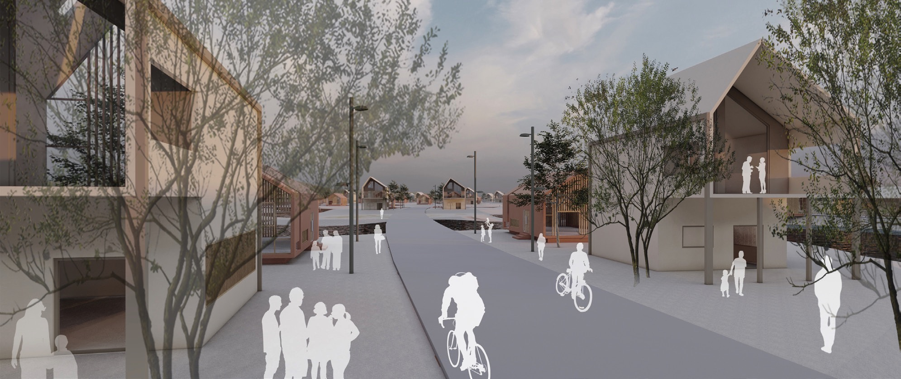

Return industrial brownfields to nature: The new owner of the abandoned factory are egrets

Egrets Dwelling Framework
The original factory building was first demolished with the remaining steel frame. Since egrets like to stay on long brams, steel beams are added to provide sufficient habitat for egrets.
Bird Watching Tunnel
The walls of bird watching tunnel are red bricks made of waste building materials, which are stacked in a specific way and interspersed with ferns.
Bird Watching Tower
The original water tower will be rebuilt. People can watch birds through the windows opening in the tower. The tower itself becomes a landscape architecture.
Build a new type of environmentally friendly island town: The second possibility of municipal waste and ocean current waste
Curved Bridge
A winding bridge connects the fIoating islands in the sea.
From The Building
A terrace of each building with a view of the island's beautiful scenery.
Street
An orange building with a pitched roof that harmonizes with the existing site in Bali.
